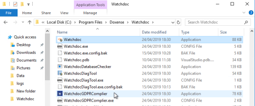
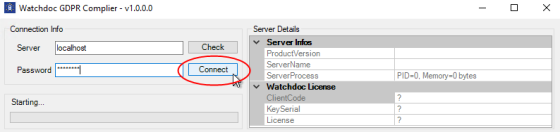
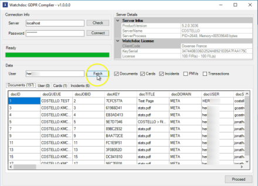
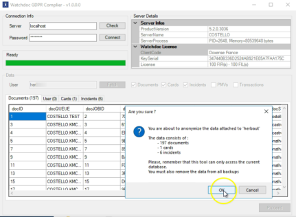
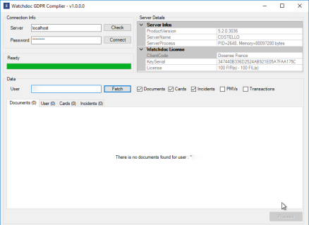
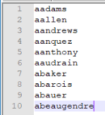
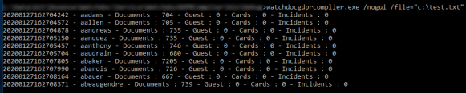

Watchdoc - Anonymisation des travaux d'impression avec WatchdocGDPRComplier
Principe
Le RGPD Watchdoc for Reporting Services (WRS) (module optionnel de Watchdoc) est un jeu de requêtes permettant la génération d'un rapport global relatif à l'activité d'impression contrôlée par Watchdoc. de l'Union Européenne stipule, dans son article 17, que tout utilisateur d'une application informatique dispose du "droit à l'effacement" ("droit à l'oubli") :
Watchdoc for Reporting Services (WRS) (module optionnel de Watchdoc) est un jeu de requêtes permettant la génération d'un rapport global relatif à l'activité d'impression contrôlée par Watchdoc. de l'Union Européenne stipule, dans son article 17, que tout utilisateur d'une application informatique dispose du "droit à l'effacement" ("droit à l'oubli") :
"La personne concernée a le droit d'obtenir du responsable du traitement l'effacement, dans les meilleurs délais, de données à caractère personnel la concernant et le responsable du traitement a l'obligation d'effacer ces données à caractère personnel dans les meilleurs délais […]" (en fonction de certains motifs).
(cf. texte intégral : https://www.gdpr-expert.eu/article.html?id=17#textesofficiels)
Pour répondre à cette exigence, Doxense® a conçu le WatchdocGDPRComplier, outil permettant de retrouver les travaux d'impression d'un utilisateur et de les anonymiser en supprimant le lien entre ces travaux et leur propriétaire.
Depuis la version 5.3.0.3295, cette opération d'anonymisation peut être réalisée en masse à l'aide de lignes de commandes exploitant un fichier texte dans lequel figurent les utilisateurs concernés par l'opération.
Procédure unitaire
Accéder à l'outil WatchdocGDPRComplier
Pour accéder à WatchdocGDPRComplier :
-
rendez-vous sur le serveur Watchdoc® en tant qu'administrateur ;
-
à l'aide d'un explorateur, rendez-vous dans C:/ProgramFiles/Doxenxe/Watchdoc;
-
lancez l'outil WatchdocGDPRComplier.exe ;

Procédure
Pour procéder à l'anonymisation des données :
-
dans l'interface Watchdoc GDPR Complier, section Connection Info, champ Password, saisissez le mot de passe d'administration ;
-
cliquez sur le bouton Connect ;

-
Après vérification, quand le curseur Starting passe au vert, dans la section Data, champ User, saisissez le nom de l'utilisateur dont vous souhaitez effacer les données ;
-
cochez les cases correspondant aux données à effacer (travaux d'impression, badges, incidents, porte-monnaie et transactions) ;
-
cliquez sur le bouton Fetch ;

-
dans la boîte d'information relative aux données trouvées qui seront effacées, confirmez votre demande ou annulez-la ;

-
au terme de l'opération, il n'est plus possible d'établir un lien entre un utilisateur et ses données :

Procédure de traitement en masse
Principe
Si l'opération d'anonymisation doit être effectuée sur un grand nombre d'utilisateurs, la procédure peut être réalisée en ligne de commandes. Elle nécessite l'export préalable, depuis l'annuaire Watchdoc®, des utilisateurs concernés par l'opération.
Cet export est enregistré sous forme d'un fichier texte (format .csv ou .txt) dans un espace de stockage accessible de l'outil en lignes de commandes.
Ce fichier comporte les comptes (login) des utilisateurs ou, dans un environnement multidomaine, le domaine et le compte (DOMAINE\login) des utilisateurs :

Procédure
Pour appliquer le traitement en masse :
-
lancez une invite de commande pour vous rendre dans le dossier c:\program files\doxense\watchdoc\ et saisissez-y la commande suivante qui appelle le fichier dans lequel sont enregistrés les comptes (login) des utilisateurs précédemment exportés :
watchdocgdprcomplier.exe /nogui /file="c:\test.txt"
-
Saisissez ensuite les arguments permettant de compléter votre commande :
-
/server=xxx = nom du serveur sur lequel l'opération doit être effectuée (valeur par défaut =localhost) ;
-
/password=xxx = mot de passe de l'administrateur habilité à effectuer l'opération (valeur par défaut = changeme) ;
-
/document=true (or "y") pour anonymiser les documents associés aux comptes utilisateurs (valeur par défaut =true) ;
-
/document=true (or "y") pour anonymiser les documents associés aux comptes utilisateurs (valeur par défaut =true) ;
-
/cards=true (or "y") pour anonymiser les badges associés aux comptes utilisateurs (valeur par défaut =true) ;
-
incidents=true (or "y") pour anonymiser les incidents associés aux comptes utilisateurs (valeur par défaut=true) ;
-
pmvs=true (or "y") pour anonymiser les quotas associés aux comptes utilisateurs (valeur par défaut =false) ;
-
transactions=true (or "y") pour anonymiser les transactions associées aux comptes utilisateurs (valeur par défaut=false) ;
-
-
Une fois la commande envoyée, le résultat s'affiche sous forme d'une liste dans laquelle apparaît, pour chaque utilisateur, le nombre d'éléments traités :

→ au terme de l'opération, il n'est plus possible d'établir un lien entre un utilisateur et ses données.